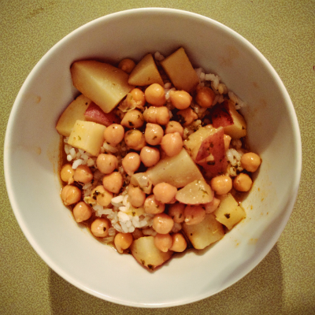

Roberto Cases's Recipes

Garbanzo Beans
Kitchenware:
- Medium Saucepan
- Stove
Ingredients:
| Olive Oil | 1 tablespoon |
| Red Potatoes, Medium diced | 1 pound |
| Garbanzo Beans | 15 ounce can |
| Chicken Broth | 15 ounces |
| Sofrito | 1 icecube or a heavy tablespoon |
| Tomato Sauce | 1 heavy tablespoon |
| Sriracha | 1 teaspoon |
| Salt & Pepper | To your personal taste |
Add the oil to the saucepan and set the stove to medium heat, uncovered
Add the diced potatoes, cooking them for 1 to 2 minutes or until they start to smell delicious. We just want to cook them a touch to make sure they retain their shape and don't become too mushy and fall apart in the soup.
After the potatoes, add the Garbanzo Beans, Chicken Broth, Sofrito and Sriracha
Bring the soup to a boil, cover, and reduce heat to medium low. Set your timer for 20 to 30 minutes
Check on it after 20 minutes. If the potatoes aren't tender and soft, re-cover for the an additional 10 minutes.
Once done, uncover and set to low. Between the can of Garbanzo beans and chicken broth, you'll likely have plenty of salt, but you may need to add more depending on your tastes and whether any of your ingredients are low/reduced sodium. I added about 15 to 20 cranks of black pepper, but that again depends on your tastes.
Great! Now we have rice and beans. This is complete meal in itself, but I often like to pair it with a cut of meat, like a pork chop or chicken breast, for extra protein.